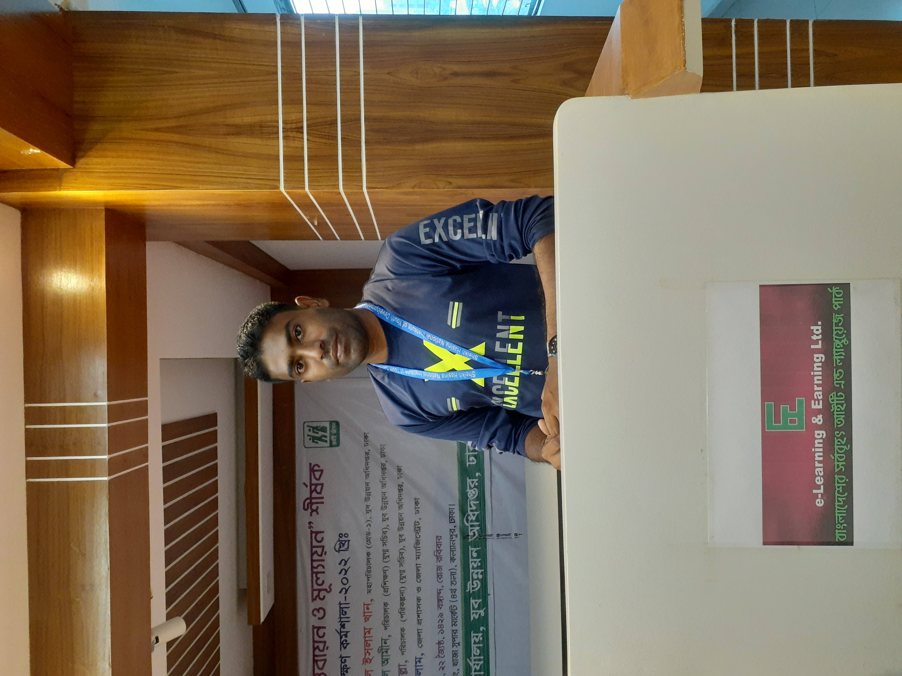

This is a good cricket match between Ban vs Pak
Today's match was very important for Bangladesh but they have lost Shakib Al Hasan Losing captain - It's been difficult, but I thought we played our best cricket today. Could have scored a few more runs in the end, but such things do happen. We played well in the middle overs which we were lacking, it's up to us to perform well in the upcoming World Cup. If we had been told we would get 173 at the start of the innings, I would have taken it gladly. We are very clear on the team we'll play in the World Cup, so that's good. My job is to score runs for the team, the bowling is not up to the mark though, that's one area I would like to improve. We have improved a lot through the tournament and that's something positive for us.
